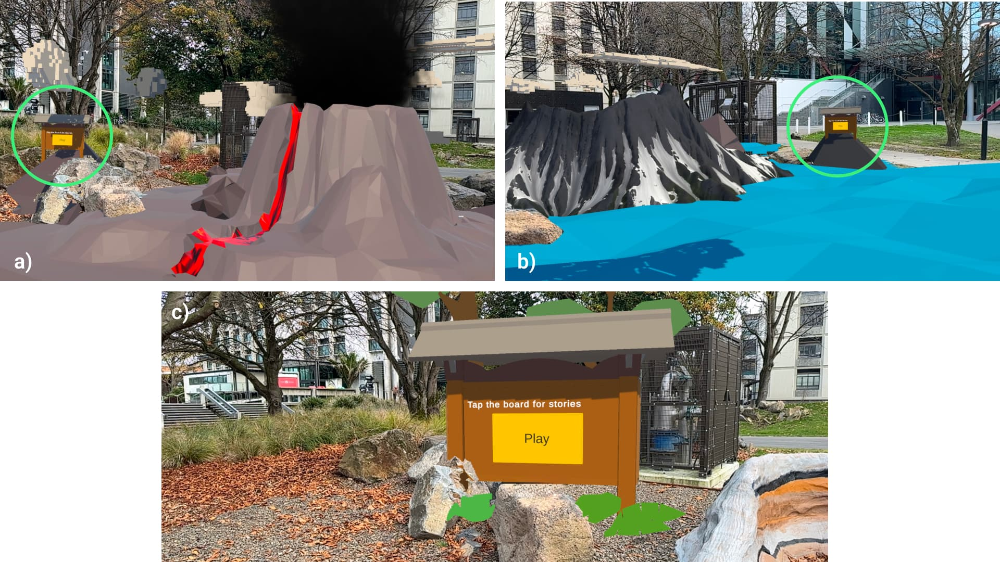
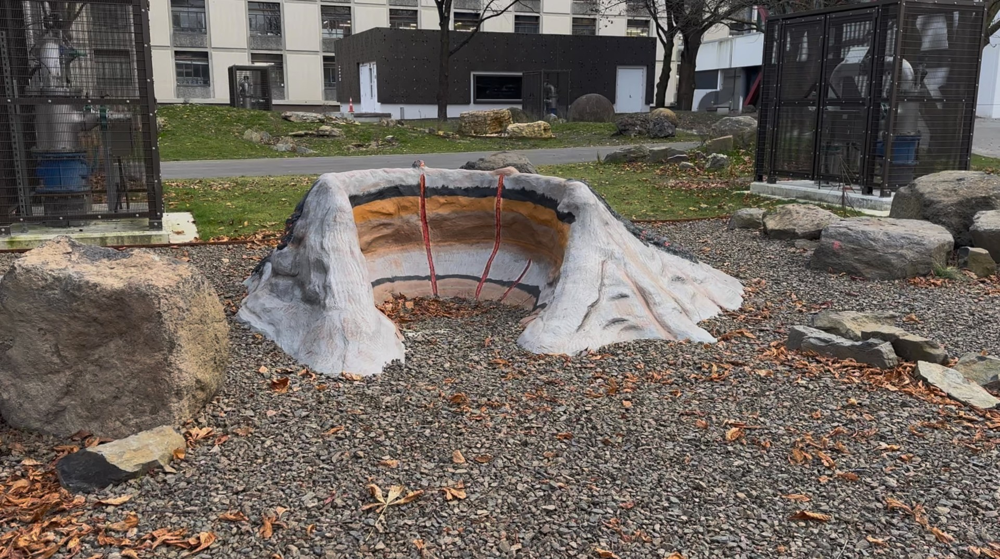
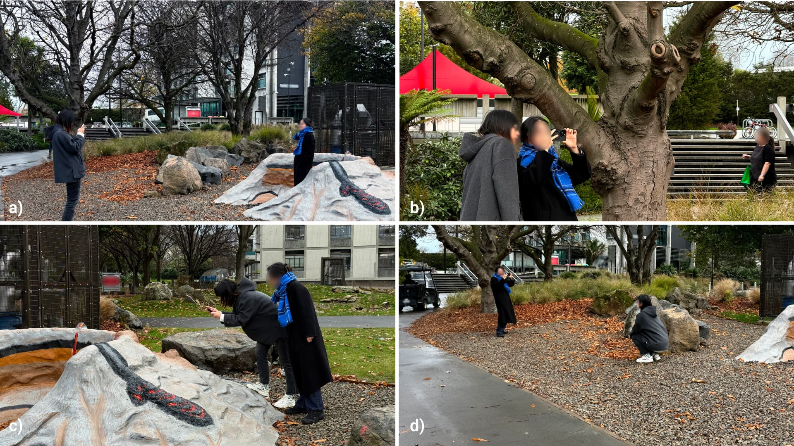
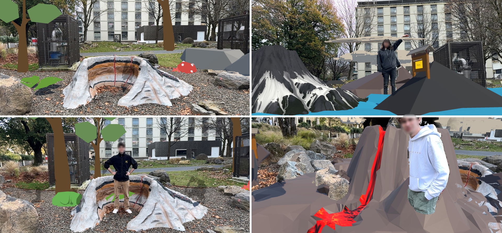

With the tourism industry in Aotearoa New Zealand requiring a transformative approach to foster culturally grounded experiences, I joined an NZD $8.2M MBIE-funded multi-university project as a Postdoctoral Researcher. My objective was to develop on-site AR experiences that enhance tourists' place attachment and collective memory. This page is about what that objective produced — CamStories, a mobile AR application I designed, built, and evaluated, which turns the ordinary act of taking a holiday photo into a shared, story-driven performance.
The Programme, and My Remit
To achieve this, I explored various mobile AR and interactive storytelling tools, ensuring all technical implementations remained in strict alignment with Māori values such as kaitiakitanga (guardianship). By leading the UX evaluation and co-design methodologies, I ensured that these digital solutions were both engaging for users and culturally relevant. I am contributing to this five-year national research programme, bridging cultural preservation with advanced spatial computing to deliver accessible digital heritage experiences.
My position sits at the point where the programme's research questions have to become something a visitor can actually hold in their hands. That means I own the full arc: identifying where the existing technology falls short, designing a response, building it to a standard where strangers can use it unsupervised outdoors, running the study that tests it, and reporting honestly on what the study shows.
The Gap I Set Out to Close
AR in tourism has a recurring flaw, and it is a behavioural one rather than a technical one. Most applications require the visitor to stop being a tourist in order to receive content: pause the conversation, stop taking photos, hold the phone still, and passively consume a narration. The social activity and the story compete for the same person at the same moment, and the story usually wins by interrupting.
Photography is where this is most obvious. Travel photography is not documentation — it is a social ritual. For a pair or a group it involves negotiation, direction, performance, and shared creativity; it is one of the moments where a trip becomes a shared memory rather than a set of individual ones. Existing AR photography research has largely treated that ritual as a problem to be solved: compositional guidance for a better-framed shot, overlays to help a stranger take your photo, historical models for then-and-now comparison. Useful work, but all of it aimed at the photographic outcome.
That left the question I wanted to work on: what if the photo-taking act itself were the narrative medium? My research question was therefore: how can a mobile AR experience transform the routine act of travel photography into a meaningful, narrative-driven, and socially engaging interaction? Two sub-questions guided the design — how integrating time-based narrative affects communication and collaboration between visitors, and how it affects their engagement with the destination, their memory of it, and their emotional connection to the place.
Designing the Camera as the Story
The design rests on three decisions.
Time-alternation as narrative reskinning. Rather than annotating the landscape with facts about it, I used the landscape as a canvas for a curated story of its own deep time. Drawing on Azuma's concept of reskinning and Liestøl's work on situated simulations, the past and the future are presented not as overlays floating in front of the world but as complete, full-screen 3D environments that replace it. This produces a deliberate cognitive oscillation: the visitor compares the virtual then on the screen against the physical now around their body, and the gap between the two is where sense-making happens.
The camera gesture is the navigation. There is no menu for time travel. Panning the phone left moves into the deep past; panning right moves into a speculative future. The gesture a photographer already performs to frame a shot is the same gesture that moves through the story, so exploration and photography are not two activities that interrupt each other — they are one activity.
Asymmetric information, on purpose. Only one person holds the phone. I split the pair into a Photographer, who sees the AR scene and directs, and a Traveler, who is inside the scene but cannot see it and must act on their partner's spoken description. This is the most consequential decision in the project: the information gap is not a limitation I worked around, it is the mechanism that forces the two people to talk to each other. The photograph becomes a record of a negotiation rather than a record of a view.
Building CamStories
I built the prototype in Unity (2022.3.50f1) on iOS, using ARKit together with Niantic's Lightship VPS so that the experience anchors to a scanned physical point of interest rather than a printed marker — the visitor arrives, raises the phone, and the world aligns itself with no setup step. It was deployed on an iPhone 14 Pro, using the device's LiDAR sensor for reliable tracking outdoors.
Two details mattered more than their size suggests. ARKit's person segmentation occludes the virtual environment with the real person, so the Traveler reads as genuinely standing inside the past rather than pasted on top of it. And because a still frame cannot hold what is actually happening in these moments — the laughing, the pointing, the mid-instruction pose — the shutter captures a still image and a three-second video clip, in the manner of a Live Photo. The artefact the pair takes home is a record of the performance, not just its best frame.
The Experience, Step by Step
The pair arrives at the site and the Photographer opens the app. The phone recognises the physical landmark, and the present-day view appears through the camera with a virtual information board and some planting added — a small signal that this place has more to say than it is currently saying.
The Photographer begins framing a shot, and in doing so pans left. The present dissolves and they are standing inside the Banks Peninsula volcanoes millions of years ago, mid-eruption, at the moment the landform they are standing on was made. Pan right instead, and they are in a speculative future where the volcano has eroded further and the sea has come back over it. The Traveler, standing in the middle of all this, can see none of it. They hear their partner react, and then they hear an instruction: stand there, look up, act like something enormous is behind you.

In each of the three eras, virtual boards can be tapped to trigger a voice-over telling the story of that period, so the Photographer becomes the one who holds the narrative and has to relay it. Then the shutter. What comes back is a still and a three-second clip of a person posing inside a volcano, or standing on the surface of a future sea, on the instruction of someone who could see it when they could not.
That is the whole loop, and it is deliberately short: explore, describe, direct, capture — then do it again in another era.
Putting It in Front of Users
I ran an exploratory within-subjects pilot study with five pairs of participants (N=10; four female, six male; aged 20–35, mostly with limited prior AR-in-tourism experience). The story CamStories tells is that of the Banks Peninsula volcanoes, whose eroded remains form the harbours and hills around Ōtautahi Christchurch. For the study itself I used the model volcano in the Earth Science Garden on the University of Canterbury campus — a geology teaching model, built to represent exactly that formation, repurposed here as a stand-in destination. It let me test the full outdoor experience, VPS anchoring and all, against a real physical landmark under repeatable conditions and within walking distance of the lab.

Each pair experienced two conditions. The Control Condition reproduced the conventional pattern the field currently uses: watch an introductory video together first, then take photos afterwards — narrative and photography separated. The Experimental Condition was the full CamStories loop, with the two fused. Condition order was counterbalanced to mitigate order effects, and the pairs swapped Photographer and Traveler roles between conditions so every participant experienced both sides of the information asymmetry.
I collected two kinds of data: the photographs and clips the participants actually produced, and joint semi-structured interviews conducted afterwards in a quiet indoor setting, covering their impressions, what they remembered of the narrative, how they collaborated, and why they took the specific photos they took. Interviews were analysed thematically; the photographic artefacts were compared across conditions for creativity, narrative content, and collaborative expression. Using the participants' own photographs as data — not just their reported opinions — gave me a behavioural measure to set against what people said.

| Pair | Control Condition | Experimental Condition | Total |
|---|---|---|---|
| P1 & P2 | 7 | 17 | 24 |
| P3 & P4 | 6 | 15 | 21 |
| P5 & P6 | 5 | 8 | 13 |
| P7 & P8 | 6 | 9 | 15 |
| P9 & P10 | 5 | 12 | 17 |
| Total | 29 | 61 | 90 |
What We Found — and the Tension I Did Not Design For
Engagement rose, and the photographs prove it. Every pair found the integrated condition more engaging than the control. The control was described in flatly passive terms — one participant compared the introductory video to a "dry lecture," another to a standard interpretive panel — and photography under it was purely documentary, an "I was there" record of a physical model. Under CamStories, participants described the experience as playful, game-like, and fun, and their behaviour matched: 61 photographs against 29, with the motivation shifting from documenting a place to creatively capturing a companion's performance inside it. As one participant put it, the real environment alone would have earned one or two snapshots at most; the AR eras were what made photographs worth taking.

Asymmetry worked, and it was the most polarising thing I built. Forcing one person to describe what the other could not see was hard — one participant found giving directions without a shared visual reference genuinely difficult. But most framed it positively and unprompted as a "team activity" and a "bonding" experience, and it was this back-and-forth that made the session memorable rather than the AR content on its own. The Traveler turned out not to be a subject at all but an active co-creator, whose interpretation of spoken cues shaped the final artefact. Passers-by stopped to watch, which suggests the experience also works outward as a conversation starter between strangers.
And the story lost. This is the finding I did not expect and the one I consider most valuable. Several Photographers admitted that once they were absorbed in framing shots, they ignored the audio narration entirely or were too distracted to retain it. Visual information — lava, sea-level rise — was consistently remembered; the voice-over was not. The exception is instructive: the one participant who recalled the narration clearly did so because she needed its content in order to direct her partner. The audio was remembered precisely where it had a job to do.
So the honest answer to my research question is split. The "socially engaging" half succeeded, decisively. The "narrative-driven" half did not: the play I designed to carry the story ended up crowding it out. Participants also asked for more control than my elegant, discovery-based panning gesture gave them — some found it intuitive, others found it arbitrary and unsignposted, and several wanted subtitles, shorter story segments, and the ability to switch the AR off to take an ordinary photo.
Where It Goes Next
The tension between playful engagement and narrative absorption is the contribution here, and it generalises beyond this prototype: in social, creative AR contexts, a story cannot survive as a passive audio layer sitting alongside the interaction. It has to be functionally load-bearing — something the participants need in order to do the thing they are enjoying. That is the principle the next iteration is built on, alongside more transparent user control and opt-in levels of guidance.
The wider value for the programme is a shift in what an AR tourism artefact is for. The photographs from this study are not attempts at technical perfection; they are records of a collaboration, souvenirs carrying the memory of the interaction that produced them. Designing for that — for the process rather than the output — is where I think shared AR in tourism has the most room to move, and it is what I am carrying into the next phase of the five-year programme.